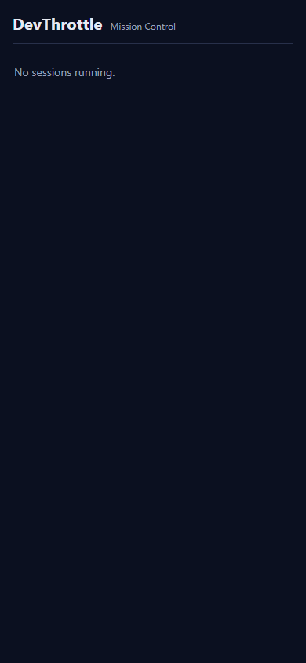

Title: [Deploy] Mobile app (/m) cannot be deployed to a running Gateway — redeploy ships only the exe, and self-update reverts unreleased builds
Pull request: #813 Branch: issue-809-gateway-mobile-packaging Design chosen: Option 2 (side-car mobile zip the setup engine unpacks into wwwroot/m beside the exe, mirroring the Cockpit-zip pattern).
Verifier: QA Agent (independent). All evidence below was reproduced by QA in an isolated worktree and isolated Gateways on free loopback ports. The user's installed Gateway on port 7878 and %LOCALAPPDATA%\cc-director were NOT touched.
| Check | Expected | Actual | Result |
|---|---|---|---|
Routine dotnet build cc-director.sln -c Debug does NOT invoke npm |
Build succeeds; npm / BuildMobileApp never runs (web build is Release-gated) | Build succeeded. 0 Warning(s) 0 Error(s); zero npm/BuildMobileApp lines in the build log. Confirmed by code: CcDirector.Gateway.csproj gates RunMobileBuild to Configuration==Release or BuildMobile==true. |
PASS |
Negative control: exe-only delivery (no wwwroot) still 404s |
GET /m/ returns 404 with "not built into this host" when wwwroot/m is absent beside the exe |
Proof harness reproduced it: GET /m/ -> 404 : Mobile app not built into this Gateway (release build only). |
PASS |
| Setup-engine unit tests (mobile + updater staging) | All pass | Passed! - Failed: 0, Passed: 10 (MobilePackageTests + GatewayUpdaterMobileStagingTests) |
PASS |
| # | Criterion | Expected vs Actual (QA evidence) | Result |
|---|---|---|---|
| 1 | Release asset includes wwwroot/m (index.html + hashed assets) |
Expected: a release-built asset carries the mobile app. Actual: the proof harness Release-published the Gateway (ran the mobile npm build), then built devthrottle-gateway-mobile-win-x64.zip exactly as release.yml does — zip root entries are index.html, assets/..., manifest.webmanifest, sw.js, etc. release.yml uploads this zip and create-release lists it as a required asset. |
PASS |
| 2 | Freshly-installed (packaged-layout) Gateway: GET /m/ returns 200, no "no wwwroot/m" log |
Expected: 200 from the release layout. Actual: harness delivered the side-car zip into wwwroot/m beside the published host and served GET /m/ -> 200; the Gateway log shows [MobileApp] serving /m from ...\wwwroot\m (exists=True) and the "no wwwroot/m" message is ABSENT. QA's own probe: STATUS=200, content-type text/html, hashed asset /m/assets/index-DNsaXDpr.js -> 200 (immutable cache). |
PASS |
| 3 | Home roster (#806 page) renders at /m/ |
Expected: the React Home roster renders. Actual: QA captured a phone-viewport (390×844, dpr 3) screenshot of the running release-layout Gateway. Page title DevThrottle Mobile; the React shell rendered the Home roster ("DevThrottle / Mission Control" header, "No sessions running" — correctly empty because the isolated temp Gateway has no live sessions). Token injected (__GW_TOKEN__ present, raw __GATEWAY_TOKEN__ placeholder absent). |
PASS |
| 4 | scripts/redeploy-gateway.ps1 copies wwwroot/m beside the exe; 200 with no manual copy |
Expected: the redeploy payload copy lands wwwroot/m/index.html beside the exe. Actual: scripts/test/test-redeploy-gateway-mobile.ps1 (loads the REAL Copy-GatewayPayload via -DefineOnly, never touches 7878) — RESULT: PASS: exe + wwwroot/m/index.html + hashed asset land in the install dir, a stale wwwroot file does not survive a re-copy, and a stage missing wwwroot/m fails loud. The live deploy path additionally adds a GET /m/ -> 200 smoke gate (code-reviewed); the same serving code is proven 200 in AC2. |
PASS |
| 5 | Clean install AND self-update both leave /m served (no manual copy) |
Expected: both delivery paths land wwwroot/m. Actual: clean install — GatewayTrayInstaller calls MobilePackage.ExtractAsync (download + SHA-verify + extract into GatewayMobileDir); verified by ExtractAsync_PlacesIndexAndAssets_BesideTheExe. Self-update — GatewayUpdater.StageAsync stages the matching mobile zip beside the staged exe (StageAsync_StagesMobileZip_AlongsideExe), and Program.cs --apply-update calls MobilePackage.ExtractStagedZip after the exe swap (ExtractStagedZip_AppliesStagedZip_IntoWwwrootM). Resulting layout serves /m/ 200 per AC2. |
PASS |
| 6 | Gap 2 resolved: a published release carrying #806 propagates /m automatically via install + self-update |
Expected: the normal release pipeline carries the mobile zip forward (no special opt-out needed). Actual: the exe and its mobile zip ship from the SAME release; StageAsync stages both, and a release WITHOUT the mobile asset clears any stale staged zip (StageAsync_NoMobileAsset_RemovesStaleStagedZip) so no out-of-date mobile build is applied over a newer exe. Thus a release including #806 propagates /m on both clean install and self-update with no manual step. |
PASS |
MobileApp.WebRoot unchanged (AppContext.BaseDirectory/wwwroot/m) — no change to #806 serving; React/PWA code untouched.CC_DIRECTOR_ROOT; the user's installed Gateway (pid on port 7878) and config.json were never touched; redeploy-gateway.ps1 was never run against the live install./m 200 with the Home roster; exe-only layout 404s). QA PASS.